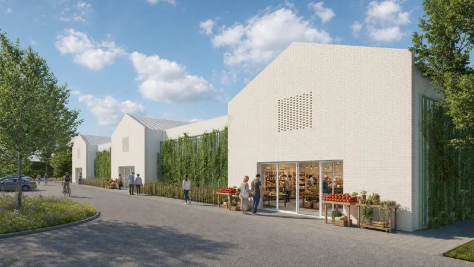
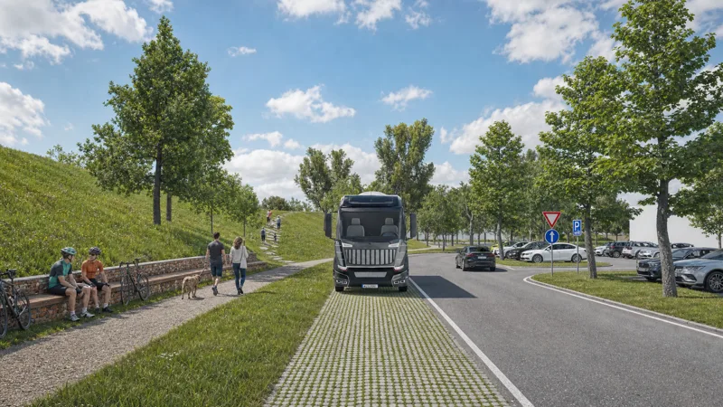
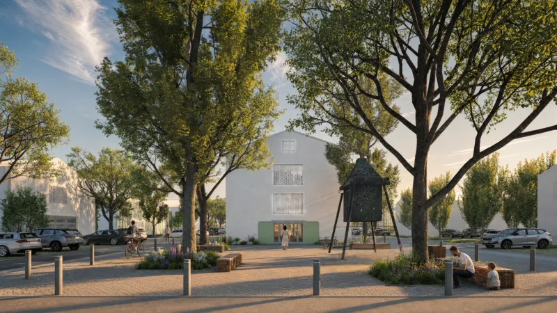
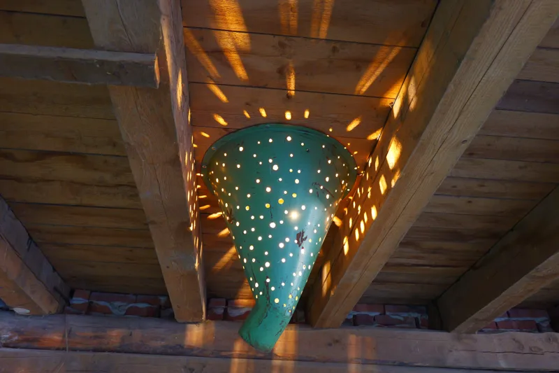
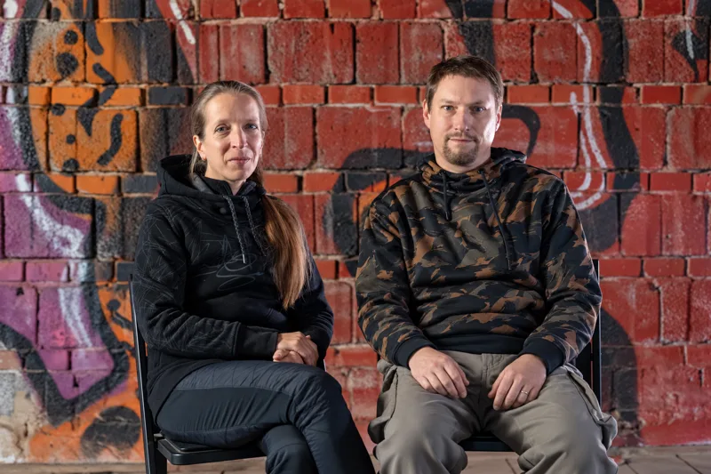

Co je hotové
Pozemky ve vlastnictví obce, územní plán pro lehkou výrobu, zkolaudované komunikace a sítě, architektonická studie a konstrukční řešení hal.

Investiční příležitostSmartzóna YEZEDO · Kostice, Jihomoravský kraj
Obec Kostice proměňuje bývalé JZD u dálnice D2 v zónu pro lehkou výrobu a služby: šest nových hal, inovační centrum v historické sýpce a park s vodou. Území, sítě i koncepce jsou připravené. Hledáme partnera, se kterým to postavíme.
01 Příležitost
Hledáme kapitál, zkušenosti a odpovědnost. Strategického partnera pro rozvoj celého areálu i firmy pro konkrétní haly. Obchodní model je otevřený a je předmětem jednání s obcí.
Pozemky ve vlastnictví obce, územní plán pro lehkou výrobu, zkolaudované komunikace a sítě, architektonická studie a konstrukční řešení hal.
Šest hal o 10 176 m² na adrese u D2, inovační centrum v sýpce, veřejný prostor s parkem a společnou správu areálu.
Investičního partnera pro výstavbu a rozvoj zóny, případně firmy, které chtějí postavit nebo převzít konkrétní halu.

02 Poloha
Kostice leží na Podluží u Břeclavi, mezi Brnem, Vídní a Bratislavou. Areál je v zastavěném území obce, v územním plánu vedený jako plochy lehké výroby.
Dojezdové časy podle mapy Atelieru Dohnalovi. Na mapě je vyznačený i budoucí obchvat Břeclavi.

03 Koncepce
Budovy, voda, zeleň, energie a veřejný prostor se navzájem doplňují. Společná koncepce dává jednotlivým záměrům širší smysl.

Klikněte na halu, otevře se její detail v nové záložce.
Návrhová situace: Zásady rozvoje Smartzóny YEZEDO Kostice, 07/2026.
Sdílené dílny, kavárna, coworking a setkávání.
Haly v měřítku původního zemědělského družstva.
Prostor pro rozsáhlejší výrobní záměry.
Členění podle potřeb budoucích firem.
Pobytové zázemí u sýpky BIQ.
Park, hospodaření s dešťovou vodou.
04 Haly
Modulární haly v měřítku původního družstva. Vnitřní prostor lze libovolně dělit, součástí může být kancelářské patro i showroom. Reprezentativní fasády a vstupy směřují do sdíleného veřejného prostoru.
| Hala | Rozměry | Plocha | Sekce | Detail |
|---|---|---|---|---|
| SO03 | 54 × 24 m | 1 296 m² | 5 | Detail ↗ |
| SO04 | 66 × 24 m | 1 584 m² | 5 | Detail ↗ |
| SO05 | 36 × 18 m | 648 m² | 3 | Detail ↗ |
| SO06 | 68 × 66 m | 4 488 m² | podle záměru | Detail ↗ |
| SO07 | 66 × 18 m | 1 188 m² | 2 | Detail ↗ |
| SO09 | 54 × 18 m | 972 m² | 5 | Detail ↗ |


05 Připravenost
Obec už udělala práci, která u brownfieldů trvá nejdéle: získala pozemky, připravila území a postavila páteřní infrastrukturu.
Většina pozemků areálu patří obci Kostice.
Plochy lehké výroby (VL). Studie je s územním plánem v souladu.
Komunikace, kanalizace, vodovod, osvětlení a rozvody NN dokončeny a zkolaudovány, s podporou programu MPO Smart Parks for the Future.
Architektonická studie Atelieru Dohnalovi, konstrukční řešení RIVESTA Consult.
Ve vazbě na komunitní energetickou síť KES Kostice. Prověřuje se fotovoltaika, akumulace, kogenerace i využití odpadního tepla.
Předpokládané vydání pro sýpku a prvních šest hal.
První etapa: sýpka a haly SO03–SO09.
06 Přidaná hodnota
Adresa s identitou a životem. Kvalitní veřejný prostor posiluje identitu i prestiž firem, které tu budou sídlit.

Jediná původní stavba JZD dostane nový život: dílny, kavárna, coworking, digitální velín obce a multifunkční sál. Areál žije i po pracovní době.

Cílem je využít veškerou dešťovou vodu přímo v areálu, bez odtoku mimo území. Zeleň ochlazuje, IoT monitoring má ověřovat přínos v reálném provozu.

Napojení na komunitní energetickou síť KES Kostice. Cihly, trámy a technické prvky původního JZD se vracejí do oběhu.
YEZEDO Services zajistí péči o zeleň, komunikace, parkoviště a společné prostory. Firmy se podílejí přehledným měsíčním servisním poplatkem, odděleným od nájmu a energií.
YEZEDO Services ↗07 Spolupráce
Obec pod vedením starosty Mgr. Libora Balgy vzala budoucnost bývalého zemědělského areálu do vlastních rukou. Architektonickou a ideovou koncepci garantuje Atelier Dohnalovi.
Obor, prostorové potřeby a předpokládaný rozsah.
Provoz, dokumentace a technické návaznosti.
Obchodní model, odpovědnosti a další postup.


Starosta Kostic a Atelier Dohnalovi o tom, co pro ně Yezedo znamená.
08 Kontakt
Napište nám pár řádků o sobě a o tom, co vás zajímá. Ozveme se a domluvíme první jednání, případně prohlídku areálu.
Libor Balgastarosta obce Kostice
 Brožura YEZEDOCelý projekt v jednom PDF · 3,3 MB
↓
Brožura YEZEDOCelý projekt v jednom PDF · 3,3 MB
↓